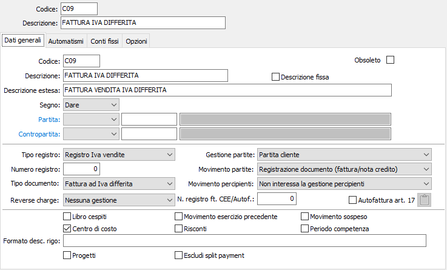

Registrazione di vendite ad Iva differita
Registrazione di Fattura
Gli utenti che effettuano forniture ad Enti Pubblici possono usufruire della normativa relativa al differimento della competenza dell'imposta che consente di rimandare il versamento dell'Iva all'atto dell'incasso delle fatture anzichè all'atto dell'emissione.

Per gestire l'evento è necessaria una causale contabile particolare, identica a quella per la registrazione delle fatture di vendita già illustrata nelle precedenti sezioni con l'unica differenza che il campo tipo documento deve contenere il valore Fattura ad Iva differita.
È inoltre necessario che esista nel piano dei conti un sottoconto Iva differita e che il codice dello stesso sia presente nella configurazione codici fissi delle tabelle di configurazione.
Le modalità di registrazione di una fattura ad Iva differita sono assolutamente identiche a quelle di una normale fattura di vendita; l'unica apparente differenza, peraltro gestita automaticamente dal programma, consiste nel fatto che la sezione contabilità imputa l'Iva al conto Iva differita anzichè al conto Iva vendite. In realtà, nella tabella Movimenti Iva tutti i righi relativi a fatture normali sono completi dei dati relativi all'anno e al mese di competenza Iva (corrispondenti all'anno e al mese di registrazione), mentre i righi relativi a fatture ad Iva differita sono privi di tali informazioni.
L'anno ed il mese di competenza verranno aggiunti a tali righi solo al momento dell'incasso, corrisponderanno appunto all'anno e mese di incasso. Contestualmente verrà girocontato l'importo dell'Iva da Iva differita a Iva vendite.
La fattura ad Iva differita verrà stampata sul registro Iva vendite del mese di pertinenza, ma l'Iva relativa non concorrerà alla determinazione dell'Iva a debito per il mese o trimestre di emissione.
Registrazione di nota di credito
La nota di credito a clienti su una precedente fattura ad Iva differita si registra esattamente come la nota di credito su fatture di vendita, con l'unica differenza che viene imputato, nella sezione contabilità, il sottoconto Iva differita anzichè il sottoconto Iva vendite.
Deve essere utilizzata una causale simile a quella illustrata di seguito.
Come per tutte le note di credito, nella finestra video Registrazione partita valgono le considerazioni già illustrate: all'atto della conferma del movimento, il programma effettua un controllo sulla tabella scadenze per il fornitore attivo, e se individua l'esistenza di partite aperte visualizza il messaggio relativo all'eventuale conferma di assegnazione della nota di credito ad una partita esistente.